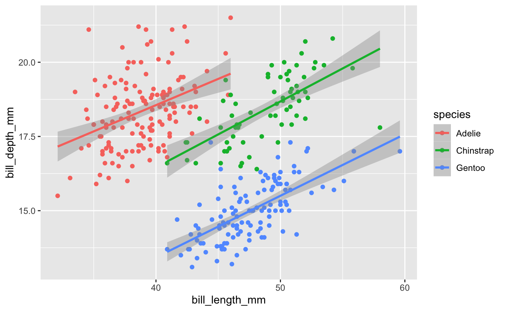
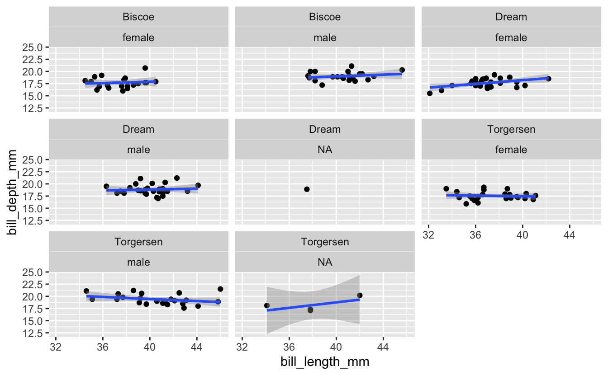

Code Club S02E08: Combining Plots
Learning objectives
- Continue to practice creating plots with ggplot
- Use faceting to divide a plot into multiple panels according to some variable.
- Arrange multiple plots of different types on a single figure.
1 – Intro
We’ll continue with our theme on plotting by exploring some options for arranging multiple plots on a single figure. A couple scenarios where you might want to do this…
1.) You create a plot that needs to be subdivided according to some variable, possibly because accounting for that variable is important for the interpretation, or maybe there’s just too much on one plot and it helps to split the data up according to some factor.
2.) You have a series of different plots that all address some related question, maybe each in a slightly different way, and you want to present them all in one figure.
We’ll take a couple approaches during this and next week’s sessions to deal with these two scenarios. Today we’ll look at some ggplot functions like facet_wrap() and facet_grid() that allow us to easily deal with scenario 1. Then in the next session we’ll try a separate package, patchwork, that offers one good option for scenario 2.
Like in previous sessions, we’ll use some packages from the tidyverse and also the palmerpenguins dataset. If you haven’t installed either of those yet, you can do so with the following commands. If you installed them previously, you can just run the latter of the commands (library()) to load them for the current session.
install.packages("tidyverse")
install.packages("palmerpenguins")
And now let’s preview/explore the penguins dataset just to remind ourselves of what’s in there…
head(penguins)
#> # A tibble: 6 x 8
#> species island bill_length_mm bill_depth_mm flipper_length_… body_mass_g sex
#> <fct> <fct> <dbl> <dbl> <int> <int> <fct>
#> 1 Adelie Torge… 39.1 18.7 181 3750 male
#> 2 Adelie Torge… 39.5 17.4 186 3800 fema…
#> 3 Adelie Torge… 40.3 18 195 3250 fema…
#> 4 Adelie Torge… NA NA NA NA NA
#> 5 Adelie Torge… 36.7 19.3 193 3450 fema…
#> 6 Adelie Torge… 39.3 20.6 190 3650 male
#> # … with 1 more variable: year <int>
summary(penguins)
#> species island bill_length_mm bill_depth_mm
#> Adelie :152 Biscoe :168 Min. :32.10 Min. :13.10
#> Chinstrap: 68 Dream :124 1st Qu.:39.23 1st Qu.:15.60
#> Gentoo :124 Torgersen: 52 Median :44.45 Median :17.30
#> Mean :43.92 Mean :17.15
#> 3rd Qu.:48.50 3rd Qu.:18.70
#> Max. :59.60 Max. :21.50
#> NA's :2 NA's :2
#> flipper_length_mm body_mass_g sex year
#> Min. :172.0 Min. :2700 female:165 Min. :2007
#> 1st Qu.:190.0 1st Qu.:3550 male :168 1st Qu.:2007
#> Median :197.0 Median :4050 NA's : 11 Median :2008
#> Mean :200.9 Mean :4202 Mean :2008
#> 3rd Qu.:213.0 3rd Qu.:4750 3rd Qu.:2009
#> Max. :231.0 Max. :6300 Max. :2009
#> NA's :2 NA's :2
2 – Faceting
Let’s start by revisiting some plots Michael Broe created in his intro to ggplot a couple sessions ago. He was using the plots to investigate whether a relationship exists between the variables bill length and bill depth in these penguins. A scatterplot with a line of best fit from ggplot…
penguins %>%
ggplot(aes(x = bill_length_mm, y = bill_depth_mm)) +
geom_point() +
geom_smooth(method = "lm")
#> `geom_smooth()` using formula 'y ~ x'
#> Warning: Removed 2 rows containing non-finite values (stat_smooth).
#> Warning: Removed 2 rows containing missing values (geom_point).

As Michael pointed out previously, mapping an additional aesthetic (color) to the variable species helps us see a relationship a little more clearly…
penguins %>%
ggplot(aes(x = bill_length_mm, y = bill_depth_mm, color = species)) +
geom_point() +
geom_smooth(method = "lm")
#> `geom_smooth()` using formula 'y ~ x'
#> Warning: Removed 2 rows containing non-finite values (stat_smooth).
#> Warning: Removed 2 rows containing missing values (geom_point).

The color aesthetic partitions the data according to some variable (in this case, species), and here helps add important information to the visualization. An alternative might be to plot the data in separate panels, with each corresponding to a different species. We can do that with either of two functions from ggplot, facet_wrap() or facet_grid(). Let’s start with facet_wrap(). This is added as an additional layer to the plot, and indicates one or more variables that will be used to split the data into separate panels. I’ll facet here by species.
penguins %>%
ggplot(aes(x = bill_length_mm, y = bill_depth_mm)) +
geom_point() +
geom_smooth(method = "lm") +
facet_wrap("species")
#> `geom_smooth()` using formula 'y ~ x'
#> Warning: Removed 2 rows containing non-finite values (stat_smooth).
#> Warning: Removed 2 rows containing missing values (geom_point).

The effect here is similar to what we did with adding a color aesthetic to the species variable earlier - it allows us to evaluate the relationship between bill length and bill depth for each species separately.
Breakout Rooms: Faceting
Exercise 1: Analyze Adelie Penguins By Island
Try analyzing the relationship between bill length and bill depth for just the Adelie penguins (the only species with observations from each of the three islands). For this species, try faceting by island. Does the relationship seem to be consistent across all islands?
Hint (click here)
Use filter() to select out Adelie penguins, then create a plot similar to the one in the example, but facet on island instead of species
Solution (click here)
penguins %>%
filter(species == "Adelie") %>%
ggplot(aes(x = bill_length_mm, y = bill_depth_mm)) +
geom_point() +
geom_smooth(method = "lm") +
facet_wrap("island")
#> `geom_smooth()` using formula 'y ~ x'
#> Warning: Removed 1 rows containing non-finite values (stat_smooth).
#> Warning: Removed 1 rows containing missing values (geom_point).

Exercise 2a: Multiple Facets
Now building on the plot you just created for Adelie Penguins, what if you wanted to facet on not just island, but a combination of island and sex? Give it a try.
Hint (click here)
facet_wrap() accepts a character vector of column names. Use the c() function to provide a vector with two column names.
Solution (click here)
penguins %>%
filter(species == "Adelie") %>%
ggplot(aes(x = bill_length_mm, y = bill_depth_mm)) +
geom_point() +
geom_smooth(method = "lm") +
facet_wrap(c("island", "sex"))
#> `geom_smooth()` using formula 'y ~ x'
#> Warning: Removed 1 rows containing non-finite values (stat_smooth).
#> Warning: Removed 1 rows containing missing values (geom_point).

Exercise 2b: Multiple Facets
There are some facets coming through in that last plot that are based on NA’s. Try getting rid of all observations that include missing data before creating the plot.
Hint (click here)
Use the drop_na() function to remove observations with NA before calling ggplot.
Exercise 3: Axis Scales
Now let’s go back to the full dataset where we faceted by species. The code we used (with the drop_na function added), along with its associated plot, are below…
penguins %>%
drop_na() %>%
ggplot(aes(x = bill_length_mm, y = bill_depth_mm)) +
geom_point() +
geom_smooth(method = "lm") +
facet_wrap("species")
#> `geom_smooth()` using formula 'y ~ x'

Use the help page for facet_wrap to look in to the scales option. Try changing the value of this option to see what effect it has on the plot.
Hint 1 (click here)
Use ?facet_wrap to get the help page for the function, and find information about the scales option.
Hint 2 (click here)
Within the facet_wrap() function, set scales = “free_y”.
Solution (click here)
penguins %>%
ggplot(aes(x = bill_length_mm, y = bill_depth_mm)) +
geom_point() +
geom_smooth(method = "lm") +
facet_wrap("species", scales = "free")
#> `geom_smooth()` using formula 'y ~ x'
#> Warning: Removed 2 rows containing non-finite values (stat_smooth).
#> Warning: Removed 2 rows containing missing values (geom_point).

In next week’s session, we’ll use facet_grid(), which has some similarities to facet_wrap(), and then check out the patchwork package, which gives you more control over how multiple plots are combined in a single figure.